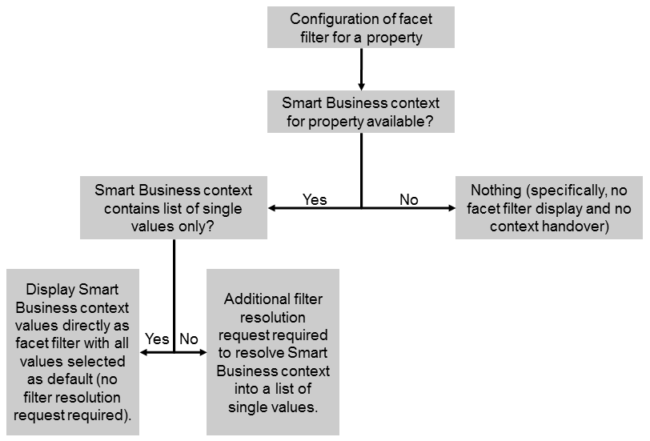

For this use case, all of the following apply:
In this case, the facet filter is displayed in the application and its content is determined by the information passed in the Smart Business context. If the context contains a list of single values only, the value help lists all these values and by default, all values are selected. If the context contains other operators, an additional filter resolution request is required. This request resolves the context into a list of single values. The value help then lists all these single values and by default, all values are selected.
To configure a facet filter for this use case, only the information about the facet filter definition is required. You don’t have to enter information for the value help request.
To configure the filter resolution request, enter the required information in the Filter Resolution section.
If you did not specify a filter resolution request, but a filter resolution is necessary to be able to display the values in the value help, the facet filter for the corresponding property is not displayed on the UI. Instead, the context is applied to the analysis path in the background.
The options described above are depicted in the following figure:
